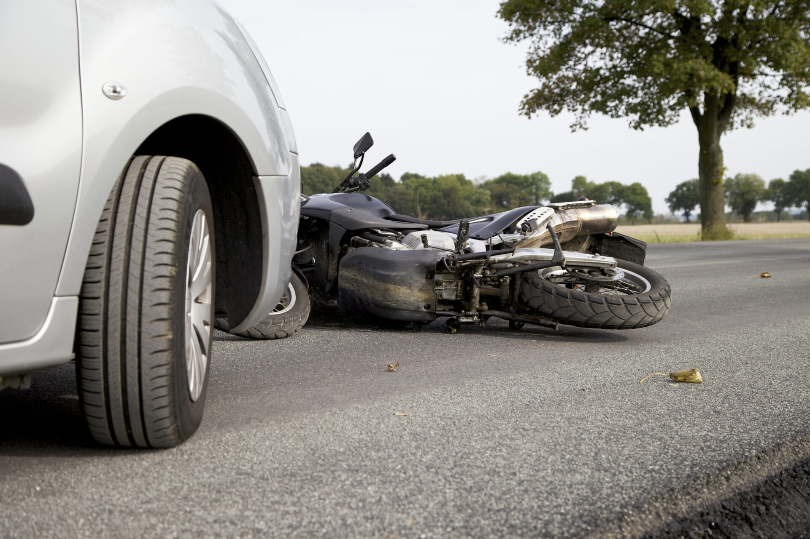

CHOQUE AUTOMOVILISTICO TERMINA HORRIBLEMENTE MAL!!!!!!!!!!!!!!!!!

el día 6 de enero en la esquina de Olazábal y Superí me chocó una chica que pasó en rojo y con alcohol en sangre y a 70km
Yo circulaba en una motocicleta y ella en un auto. Me produjo rotura de tibia y peroné expuesta,
fisura de 3 costillas y quebradura de dedo gordo del pie izquierdo con desprendimiento de piel.
Ya estoy operado gracias a dios y con vida ya que salí volando de la moto y quedé incrustado entre una reja y un pilar
Autor: Cristobal colon
Fecha: 10/07/2004
Ubicacion: Guanajuato